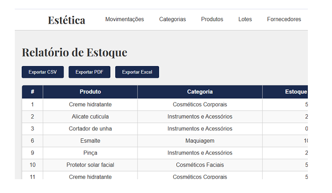
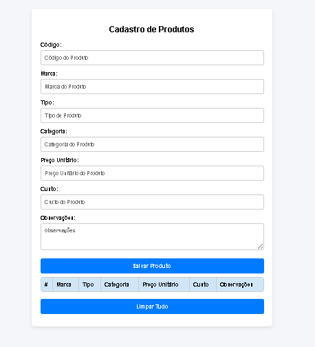
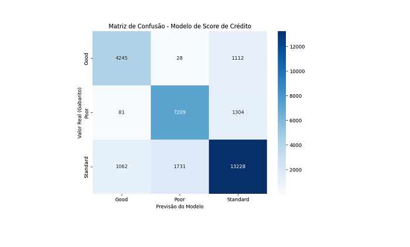

Olá, eu sou
Traduzindo sonhos para a linguagem de máquina.
Sou desenvolvedora backend em transição de carreira, com foco em Python, APIs REST, automações e integração com Inteligência Artificial Generativa.
Minha trajetória profissional anterior foi marcada por atuação em áreas analíticas, gestão de processos e documentação técnica, experiências que fortaleceram habilidades como pensamento lógico, organização, resolução de problemas e visão de negócio.
Atualmente, venho desenvolvendo projetos práticos utilizando Python, Flask, Node.js e banco de dados SQL, buscando criar soluções eficientes, escaláveis e orientadas a dados.
Tenho grande interesse em backend, arquitetura de software e IA aplicada ao desenvolvimento de soluções reais.

Sistema completo com autenticação, cadastro de produtos, fornecedores e lotes, controle de estoque e geração de relatórios, desenvolvido para o curso de Estética.
Ver projetoAplicação web que utiliza a Gemini API para responder perguntas esportivas de forma inteligente, com interface responsiva e renderização em Markdown.
Ver projeto
Automação RPA desenvolvida em Python para cadastro em massa de produtos, utilizando PyAutoGUI e Pandas para integração com arquivos CSV e otimização de processos repetitivos.
Ver projetoAplicação fullstack com MVC, autenticação simples, operações CRUD, integração com MySQL e views em Pug.
Ver projeto
Modelo de Machine Learning para automatizar o Score de Crédito utilizando Random Forest e KNN. Alcançando 82% de acurácia com foco em mitigação de riscos e análise de dados financeiros. Desenvolvido com Python, Scikit-Learn e Pandas.
Ver projetoTecnologias e Habilidades comportamentais que possuo para desenvolver soluções completas
Disponível para oportunidades como Desenvolvedora Backend Júnior, projetos freelance e colaborações em tecnologia. Entre em contato pelos canais abaixo.
Disponível para oportunidades remotas.